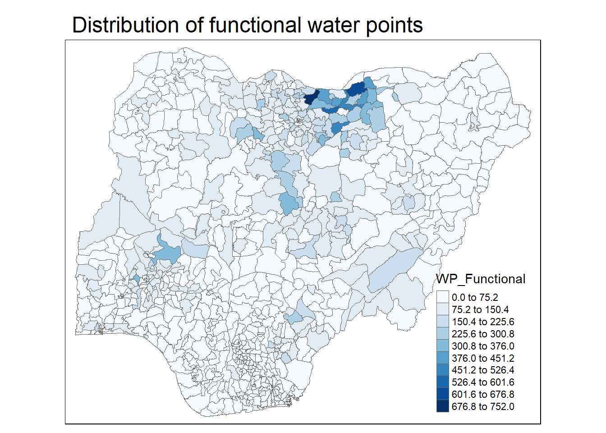
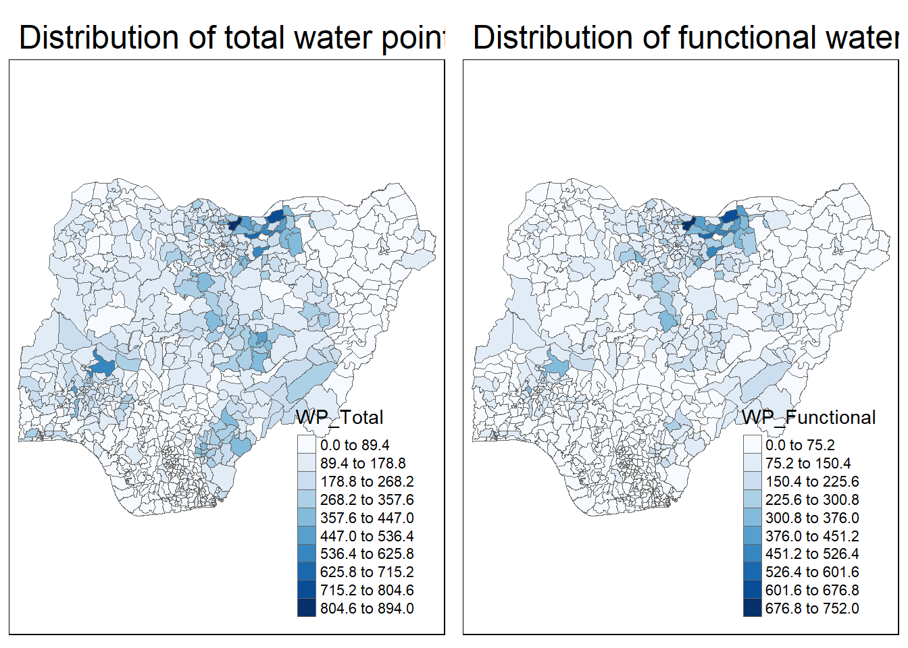
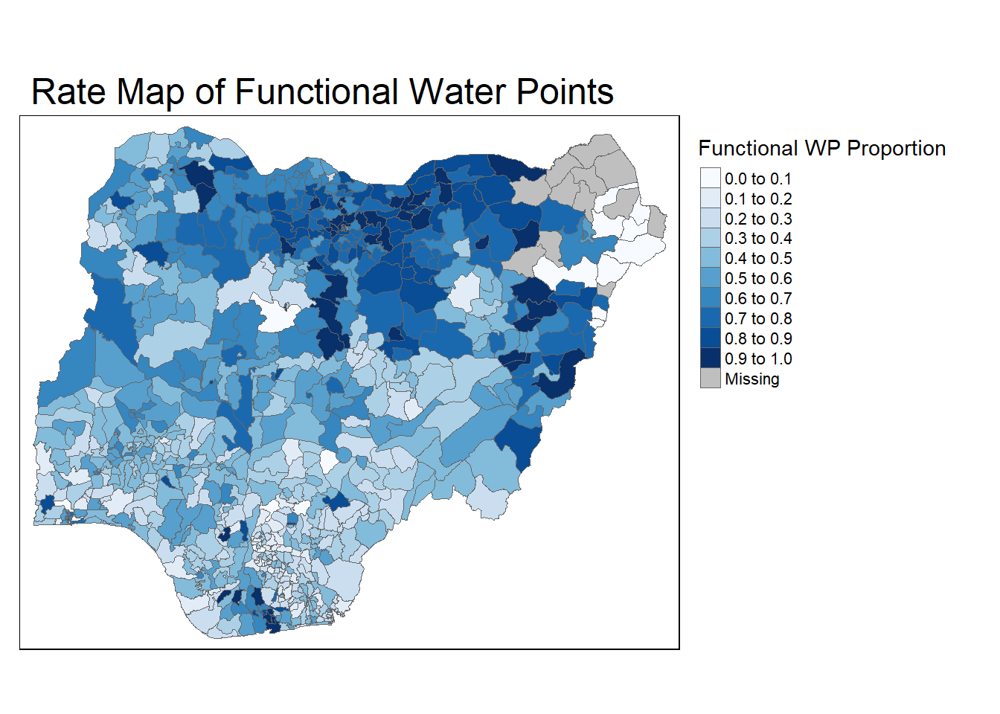
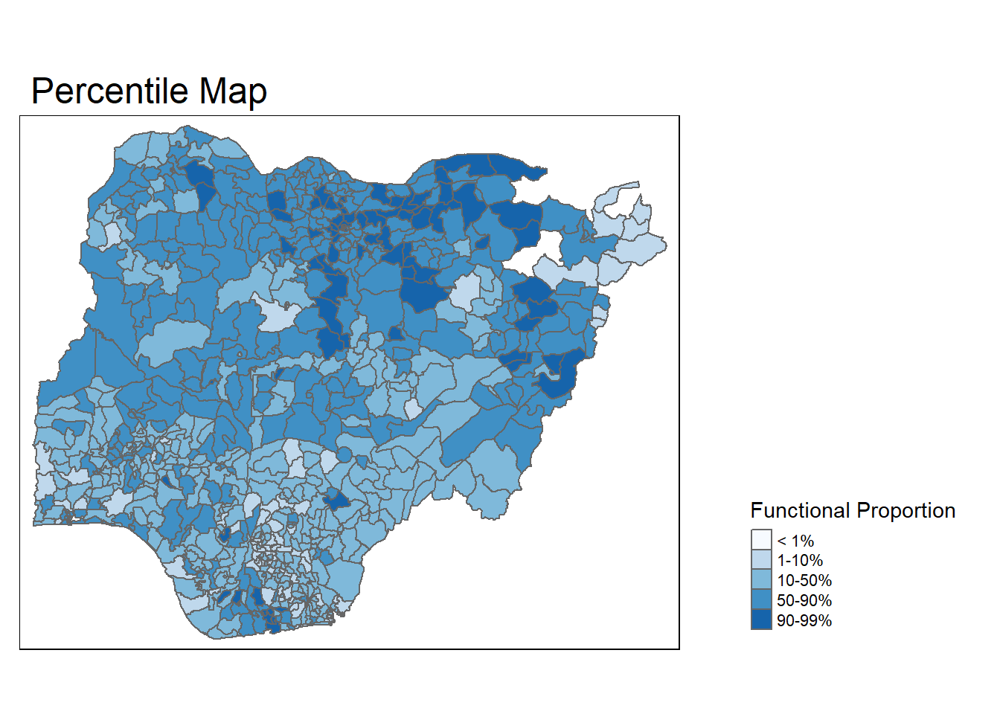
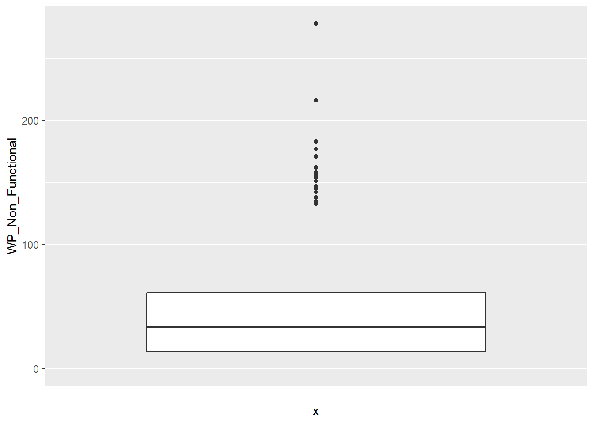

pacman::p_load(sf, tidyverse, tmap)In-Class Exercise 3: Thematic and Analytical Mapping
Import Packages
Import Data
We will be reusing ICE2’s RDS of nga_combined.
NGA_wp <- read_rds("../chapter-02/data/rds/NGA_wp.rds")glimpse(NGA_wp)Rows: 774
Columns: 9
$ ADM2_EN <chr> "Aba North", "Aba South", "Abadam", "Abaji", "Abak",…
$ ADM2_PCODE <chr> "NG001001", "NG001002", "NG008001", "NG015001", "NG0…
$ ADM1_EN <chr> "Abia", "Abia", "Borno", "Federal Capital Territory"…
$ ADM1_PCODE <chr> "NG001", "NG001", "NG008", "NG015", "NG003", "NG011"…
$ geometry <MULTIPOLYGON [m]> MULTIPOLYGON (((548795.5 11..., MULTIPO…
$ WP_Functional <int> 7, 29, 0, 23, 23, 82, 16, 72, 79, 18, 25, 54, 28, 55…
$ WP_Non_Functional <int> 9, 35, 0, 34, 25, 42, 15, 33, 62, 26, 13, 73, 35, 36…
$ WP_Unknown <int> 1, 7, 0, 0, 0, 109, 3, 14, 11, 22, 1, 8, 0, 37, 88, …
$ WP_Total <int> 17, 71, 0, 57, 48, 233, 34, 119, 152, 66, 39, 135, 6…Choropleth Mapping
p1 <- tm_shape(NGA_wp) +
tm_fill("WP_Functional",
n = 10, # 10 classes
style = "equal",
palette = "Blues") +
tm_borders(lwd = 0.1,
alpha = 1) +
tm_layout(main.title = "Distribution of functional water points",
legend.outside = FALSE)
p1
p2 <- tm_shape(NGA_wp) +
tm_fill("WP_Total",
n = 10, # 10 classes
style = "equal",
palette = "Blues") +
tm_borders(lwd = 0.1,
alpha = 1) +
tm_layout(main.title = "Distribution of total water points",
legend.outside = FALSE)Small multiples
tmap_arrange(p2, p1, nrow=1)
Choropleth Map for Rates
NGA_wp <- NGA_wp %>%
mutate(`WP_Functional_Proportion` = `WP_Functional`/`WP_Total`,
`WP_Non_Functional_Proportion` = `WP_Non_Functional`/`WP_Total`)Plotting map of rate
p3 <- tm_shape(NGA_wp) +
tm_fill("WP_Functional_Proportion",
n = 10, # 10 classes
title = "Functional WP Proportion",
style = "equal",
palette = "Blues") +
tm_borders(lwd = 0.1,
alpha = 1) +
tm_layout(main.title = "Rate Map of Functional Water Points",
legend.outside = TRUE)
p3
Percentile Map
Special type of quantile map with six specific categories: 0-1%, 1-10%, 10-50%, 50-90%, 90-99%, and 99-100%. We need to create a classification scheme using breakpoints that are derived by means of the quantile command, passing an explicit vector of cumulative probabilities as c(0, .01, .1, .5, .9, .99). Begin and endpoint need to be included.
Data Preparations
Drop NA values
NGA_wp <- NGA_wp %>% drop_na()Create customised classification and extract values
percent <- c(0, .01, .1, .5, .9, .99)
var <- NGA_wp["WP_Functional_Proportion"] %>%
st_set_geometry(NULL) # need to drop the geometric field
quantile(var[,1], percent) 0% 1% 10% 50% 90% 99%
0.0000000 0.0000000 0.2169811 0.4791667 0.8611111 1.0000000 Utility Functions
Create get.var function to generalise the customised classification steps
Arguments:
vname: variable name that you want to plot (as character, in quotes)
df: name of sf data frame
Returns:
- v: vector with values (without a column name)
get.var <- function(vname, df) {
v <- df[vname] %>%
st_set_geometry(NULL)
v <- unname(v[,1])
return(v)
}Create percentmap function to plot the percentile map
percentmap <- function(vname, df, legtitle=NA, mtitle="Percentile Map") {
percent <- c(0, .01, .1, .5, .9, .99)
var <- get.var(vname, df)
bperc <- quantile(var, percent)
tm_shape(df) +
tm_polygons() +
tm_shape(df) +
tm_fill(vname,
title=legtitle,
breaks=bperc,
palette="Blues",
labels=c("< 1%", "1-10%", "10-50%", "50-90%", "90-99%", "> 99%")) +
tm_borders() +
tm_layout(main.title = mtitle,
legend.outside = TRUE,
legend.position = c("right", "bottom"),
title.position = c("right", "bottom"))
}Plot
percentmap("WP_Functional_Proportion", NGA_wp, legtitle = "Functional Proportion")
Box Plot
For visualising outliers and distribution
ggplot(data = NGA_wp, aes(x="", y=WP_Non_Functional)) +
geom_boxplot()